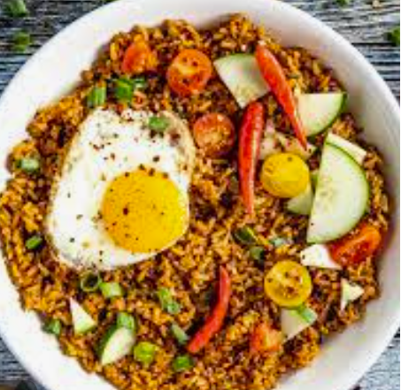

Nasi Goreng

For 2 servings
Ingredients:
- 2 tablespoons sesame oil
- 3 cloves garlic, minced
- 2 chicken breasts, diced
- salt, to taste
- pepper, to taste
- 1 cup carrot (120 g), diced
- 1 cup broccoli florets (175 g)
- 2 cups brown rice (400 g), cooked
- ½ cup frozen peas (75 g)
- 3 tablespoons low sodium soy sauce
Preparation:
- Heat sesame oil in a skillet, and cook garlic until softened.
- Add the chicken, salt, and pepper, and sauté for 5 minutes.
- Add the carrots and broccoli, and sauté until tender.
- Add the rice, soy sauce, and peas, and mix thoroughly.
- Enjoy!
Main page
Indonesian Cuisine page